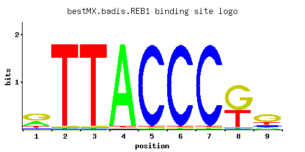

REB1
YBR049C, GRF2
RNA polymerase I enhancer binding protein; DNA binding protein which binds to genes transcribed by both RNA polymerase I and RNA polymerase II; required for termination of RNA polymerase I transcription
Best-performing DNA-binding model.

View and copy the recommended matrices ↘
A | 0.300 0.010 0.010 0.970 0.010 0.010 0.010 0.010 0.150 C | 0.100 0.010 0.010 0.010 0.970 0.970 0.970 0.010 0.150 G | 0.500 0.010 0.010 0.010 0.010 0.010 0.010 0.590 0.550 T | 0.100 0.970 0.970 0.010 0.010 0.010 0.010 0.390 0.150
A | 30 1 1 97 1 1 1 1 15 C | 10 1 1 1 97 97 97 1 15 G | 50 1 1 1 1 1 1 59 55 T | 10 97 97 1 1 1 1 39 15
A | -0.06 -3.47 -3.47 1.11 -3.47 -3.47 -3.47 -3.47 -0.76 C | -0.59 -2.89 -2.89 -2.89 1.68 1.68 1.68 -2.89 -0.18 G | 1.02 -2.89 -2.89 -2.89 -2.89 -2.89 -2.89 1.19 1.12 T | -1.16 1.11 1.11 -3.47 -3.47 -3.47 -3.47 0.20 -0.76
Alternative candidate matrices 11
Historical matrix candidates from the original ScerTF database. Expand a source to inspect its original logo, scores, and matrix values.
REB1_AFoat et. al.P = 4.64e-129View matrix ↘
REB1_BFoat et. al.P = 2.59e-130View matrix ↘
REB1_CFoat et. al.P = 7.69e-144View matrix ↘
REB1_AFordyce et. al.P = 1.25e-145View matrix ↘
REB1_BFordyce et. al.P = 1.25e-145View matrix ↘
REB1_CFordyce et. al.P = 2.88e-131View matrix ↘
REB1Harbison et. al.P = 8.63e-131View matrix ↘
REB1Macisaac et. alP = 1.43e-146View matrix ↘
REB1Morozov et. al.P = 5.62e-141View matrix ↘
REB1Pachkov et alP = 3.80e-157View matrix ↘
REB1Zhu J and MQ ZhangP = 1.55e-129View matrix ↘
Gene-level annotations and interactions.
Genes bound in ChIP-chip experiments 278 genes
YAL030W, YAL031C, YBL013W, YBL014C, YBL036C, YBL058W, YBL059C-A, YBR163W, YBR164C, YBR165W, YBR179C, YBR180W, YBR222C, YBR224W, YBR225W, YBR236C, YBR237W, YCR032W, YCR094W, YDL007W, YDL045W-A, YDL137W, YDL140C, YDL186W, YDL188C, YDL212W, YDL213C, YDL225W, YDL226C, YDL232W, YDR154C, YDR155C, YDR156W, YDR157W, YDR158W, YDR219C, YDR221W, YDR257C, YDR282C, YDR313C, YDR322C-A, YDR323C, YDR370C, YDR371W, YDR372C, YDR373W, YDR465C, YDR466W, YDR498C, YDR499W, YEL004W, YEL005C, YEL012W, YEL022W, YEL023C, YEL027W, YER007C-A, YER013W, YER039C, YER040W, YER049W, YER070W, YER105C, YER106W, YER156C, YER157W, YFL005W, YFL023W, YFL024C, YFR050C, YGL068W, YGL070C, YGL088W, YGL089C, YGL119W, YGL120C, YGL151W, YGL152C, YGL181W, YGL182C, YGL191W, YGL193C, YGL198W, YGL200C, YGL238W, YGL244W, YGR012W, YGR078C, YGR079W, YGR134W, YGR135W, YGR147C, YGR172C, YGR173W, YGR179C, YGR184C, YGR191W, YGR231C, YGR232W, YGR235C, YGR241C, YGR243W, YHL030W, YHL031C, YHR039C-A, YHR040W, YHR170W, YIL014W, YIL022W, YIL023C, YIL075C, YIL108W, YIL109C, YIL112W, YIL125W, YIL148W, YIL149C, YIR002C, YIR003W, YJL001W, YJL002C, YJL003W, YJL004C, YJL148W, YJL158C, YJL194W, YJL196C, YJR085C, YJR086W, YJR087W, YJR090C, YJR098C, YJR099W, YJR100C, YJR127C, YJR137C, YJR138W, YKL051W, YKL052C, YKL058W, YKL059C, YKL072W, YKL077W, YKL081W, YKL082C, YKL104C, YKL121W, YKL122C, YKL142W, YKL145W, YKL146W, YKL147C, YKL148C, YKL202W, YKL203C, YKR015C, YKR016W, YKR068C, YKR069W, YKR076W, YLL040C, YLR083C, YLR114C, YLR115W, YLR170C, YLR223C, YLR224W, YLR275W, YLR308W, YLR367W, YLR378C, YLR380W, YML001W, YML119W, YML120C, YML124C, YML129C, YMR001C, YMR002W, YMR039C, YMR040W, YMR047C, YMR048W, YMR117C, YMR121C, YMR122W-A, YMR182C, YMR186W, YMR188C, YMR189W, YMR214W, YMR221C, YMR260C, YMR280C, YMR281W, YNL008C, YNL090W, YNL091W, YNL111C, YNL113W, YNL115C, YNL117W, YNL118C, YNL161W, YNL169C, YNL171C, YNL243W, YNL244C, YNL262W, YNL263C, YNL279W, YNL280C, YNL284C, YNL308C, YNR011C, YNR012W, YNR013C, YNR014W, YNR017W, YNR039C, YNR040W, YOL004W, YOL005C, YOL006C, YOR044W, YOR048C, YOR074C, YOR075W, YOR076C, YOR077W, YOR093C, YOR094W, YOR116C, YOR117W, YOR122C, YOR128C, YOR148C, YOR149C, YOR150W, YOR151C, YOR157C, YOR158W, YOR187W, YOR196C, YOR197W, YOR237W, YOR272W, YOR318C, YOR319W, YOR324C, YOR326W, YOR335C, YOR336W, YOR340C, YOR341W, YOR353C, YPL180W, YPL182C, YPL204W, YPL206C, YPL211W, YPL212C, YPR025C, YPR026W, YPR052C, YPR053C, YPR055W, YPR067W, YPR074C, YPR076W, YPR099C, YPR101W, YPR119W, YPR163C, YPR164W, YPR181C, YPR182W, YPR197C
Genes affected by TF deletion 246 genes
YDR034C-C, YDR404C, YGR280C, YGR282C, YHL048W, YLR218C, YMR045C, YML117W-A, YMR046W-A, YOR192C-A, YOR193W, YDR194C, YGL009C, YHR119W, YKL049C, YLR058C, YBR031W, YBR005W, YCL054W, YDR034C-D, YGL168W, YIL147C, YJR047C, YKR072C, YKR042W, YMR046C, YOL014W, YOL046C, YOL016C, YOR192C-B, YPL240C, YAL003W, YAL036C, YDL097C, YGL012W, YGR122C-A, YHR142W, YHR179W, YJL116C, YJL086C, YPL048W, YPR138C, YDR158W, YFL010W-A, YHR025W, YIR034C, YJR147W, YLL034C, YMR105C, YOL106W, YOR347C, YOR289W, YDR337W, YGL105W, YHR208W, YIL018W, YLR157C-A, YMR316W, YHR183W, YDR098C-A, YDR525W, YFL010C, YHR026W, YJR146W, YLL061W, YLR339C, YOL103W-B, YOR344C, YER023W, YER052C, YER083C, YER057C, YGR211W, YGR243W, YIL051C, YKL199C, YML058W, YMR251W-A, YBR010W, YBR012C, YBR012W-B, YDR012W, YJR026W, YJR028W, YLR227W-A, YMR050C, YNL030W, YOL052C-A, YAR010C, YGR161C-C, YGR161W-A, YJL121C, YKL086W, YLR410W-B, YMR202W, YNL284C-A, YOR385W, YBR041W, YBR012W-A, YCL064C, YDR411C, YER150W, YHL021C, YIL117C, YJR027W, YJR029W, YLR256W-A, YMR051C, YNL054W-A, YNL057W, YOR230W, YOR202W, YPL218W, YAR009C, YGR161C-D, YGR161W-B, YLR035C-A, YLR410W-A, YOR078W, YPL028W, YDR168W, YDR502C, YFR015C, YIR042C, YLR344W, YLR380W, YOR323C, YPL274W, YHR215W, YJL217W, YJL159W, YJL191W, YLR162W, YLR194C, YFL014W, YDR170W-A, YGR038C-A, YHR030C, YHR060W, YJL027C, YJR150C, YDL229W, YDR316W-A, YER062C, YHR214C-C, YJL152W, YJL158C, YBR048W, YDR388W, YER131W, YIL094C, YJR032W, YKR087C, YPL223C, YPL193W, YPL257W-A, YDR261W-A, YGR109W-B, YLR414C, YOR049C, YBL101W-A, YER159C-A, YML126C, YML128C, YOL030W, YGR137W, YHR163W, YKL120W, YCR097W, YKL030W, YLL044W, YLR320W, YGR260W, YML045W-A, YDR176W, YGR074W, YIR043C, YLR355C, YNL160W, YPR002C-A, YBL005W-A, YDR354W, YER044C, YGR195W, YGR259C, YKL183W, YLR171W, YML040W, YML073C, YPL131W, YER091C, YBR054W, YER138C, YGL225W, YGL258W, YHL009W-A, YLR297W, YNL073W, YOL041C, YOR247W, YAR042W, YBR249C, YDR210W-D, YDR212W, YEL034W, YGL001C, YGR176W, YKL103C, YOR063W, YBR025C, YCR005C, YDR391C, YFL002W-B, YER137C-A, YGL253W, YGL224C, YGL226C-A, YHL033C, YHR015W, YHR019C, YJR105W, YJR043C, YJR075W, YMR038C, YNL072W, YOL040C, YOR248W, YOR280C, YPL257W-B, YPL198W, YDR210W-A, YDR210W-C, YFR055W, YOR056C, YPR158W-B, YMR158C-B, YOL103W-A, YOR343C-B, YPR074C, YDR365W-A, YKL161C, YBR084W, YCR103C, YGR027W-A, YOR343C-A, YER073W
Genes supported by both experiments 5 genes
YDR158W, YGR243W, YJL158C, YLR380W, YPR074C
Predicted TF–TF partners 5 genes
ABF1, MBP1, STB3, SWI4, SWI6